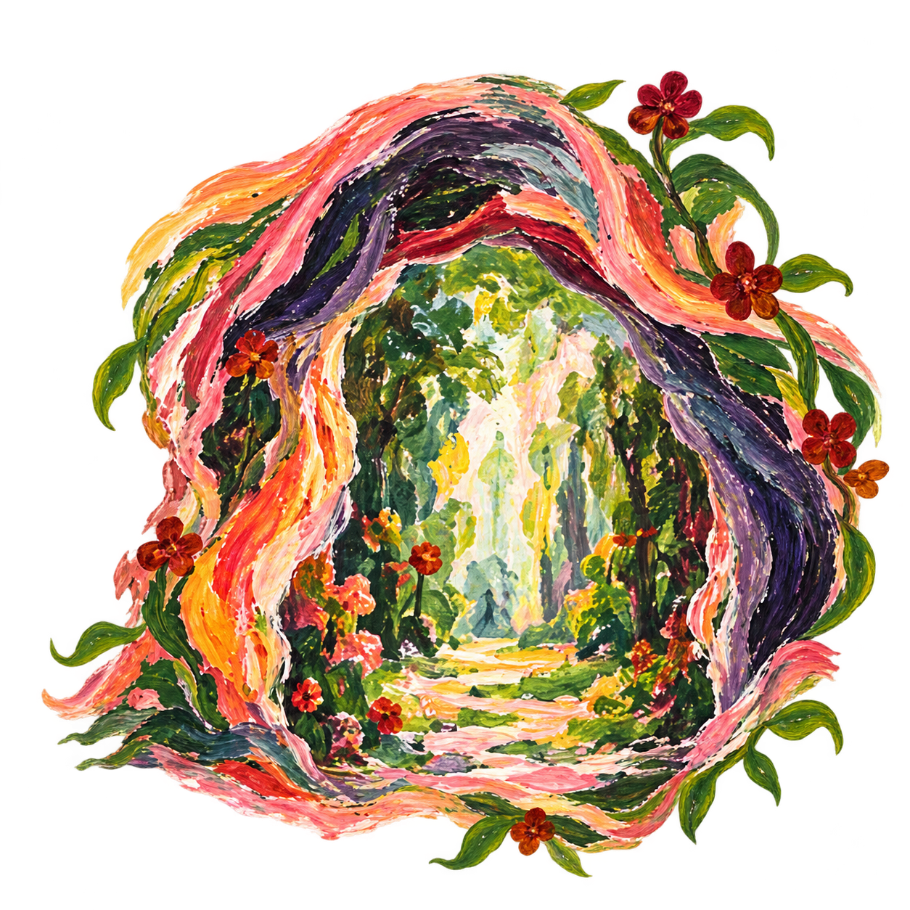

GemDen baut · FriedenFreudeEierkuchen verbindet
Eine Welt, die wir gemeinsam bauen.
Hast du es nicht satt, dass die Konzerne uns alle abziehen? Lass uns eine Community gründen. Lass uns füreinander da sein. Nicht von den Reichen abhängig. Sondern unabhängig!
Jetzt loslegen
Blob kennt die Wege. Entscheiden musst du trotzdem selbst.Weiter entdecken
Ein Stück weiter durch den Garten.
Entdecke Orte auf der Karte, plane gemeinsame Zeit oder lerne das FFE-System kennen.